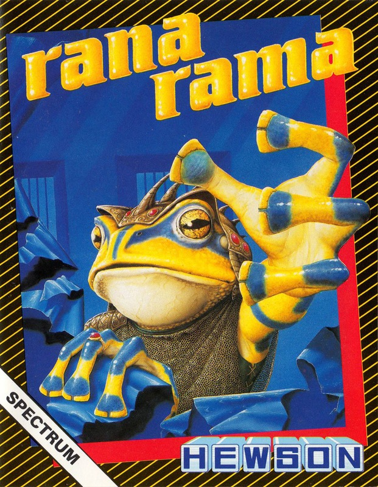
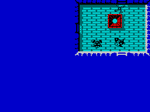
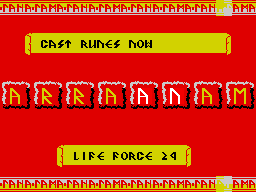

Ranarama


{kind=link}

| Publisher: | Hewson Consultants |
| Price: | £7.95 |
| Year: | 1987 |
| Source: | CRASH, Issue 38 |

Mervyn is a sorcerer’s apprentice — well actually, at the moment he’s a frog! A new spell that he was trying out was supposed to make him irresistible to women, but it went horribly wrong and he was left hopping about in amphibian form. This was fortunate however — shortly after he messed up his macho magic, Mervyn’s dungeon was invaded by war-mongering wizards who killed everything in sight except Mervyn, believing him to be a harmless frog.
The dungeon is packed with wizards and their evil minions, and as if that wasn’t enough, generators situated around the mazes of rooms that make up the levels spew forth magical weapons. Mervyn has to kill 96 wizards before his task is complete — 12 evil magicians on each level.

The screen gives an overhead view of the room Mervyn currently occupies, showing the adjacent rooms that he has already visited. Between 50 and 100 rooms make up a single level, and they have all been plunged into darkness. As Mervyn enters a room it is flooded with light, and remains lit for the rest of the game. Rooms are connected by doorways, some of which are invisible: the position of a portal is made clear when a wizard negotiates a hidden door, or a special spell can be invoked to reveal the entries and exits.
Mervyn tackles the wizards by bumping into them. Colliding with a magician takes the player into a sub-game where the letters of the word RANARAMA are jumbled onto the screen. Pairs of letters may be swapped by moving a cursor over them and pressing fire — the aim is to sort them into the correct order within a time limit and thus defeat the wizard. When the wizard dies, he sheds useful runes — these only last a short time, so Mervyn has to scurry round and pick them up before their power wanes. Runes may be converted and used to boost missile and shield strength, or exchanged for components of spells or extra energy. Losing the battle with a wizard results in a loss of spell power or death.

which you have to play a magical
form of Scrabble
Designs found on the floor of the dungeon are called Glyphs and come in four varieties — pressing fire when Mervyn is standing on a Glyph activates it. A Glyph of Seeing reveals a map of the room that you have visited; a Glyph of Power activates a spell which acts as a ‘smart bomb’; Way Glyphs act as teleporters, transporting Mervyn to another level; while a Glyph of Sorcery allows Mervyn to examine the magical status screen that displays a list of runes collected. This also indicates the spells that Mervyn is using and allows him to exchange runes for additional powers.
Four types of spell are available: Power, Attack, Defence and Effect — and spells have eight levels of potency. As Mervyn progresses through the eight levels of the dungeon he encounters more powerful adversaries, and spells of the appropriate level of potency are required to deal with them.
Mervyn’s energy is drained as he moves around the dungeon, and the energy loss is more rapid when higher-level spells are used. Contact with the evil wizards and their minions also saps energy, but strength can be replenished by bumping into one of the floating energy crystals or by exchanging runes for a new power spell.
Points are awarded for killing Magical Minions and for eliminating the Generators that produce Magic Weapons, but Mervyn must have appropriately powerful spells before attacking the denizens. Blasting an eighth-level creature with sixth-level magic only serves to make it madder!
Should Mervyn manage to massacre all 96 magicians he wins his freedom — and with any luck a spell to turn him back into human form will be thrown into the package...
CRITICISM
‘I grimaced when I heard that HEWSON were doing a Gauntlet variant — there are so many around at the moment that I’m getting bored of them. This however is more than just another clone — to my mind, Ranarama is the most playable game that has arrived for review this month. Fighting off the multitude of dungeon minions makes roaming the playing area really frantic, and the gameplay is straightforward enough to make it compelling from the word go. Some of Ranarama’s ideas are perhaps a little too similar to those used in Paradroid and Quazatron, but the overall gameplay certainly makes it well worth the asking price.’
BEN
‘Hewson have taken an existing idea and improved on it. The Gauntlet style has been beautifully incorporated into what is basically a shoot ’em up extravaganza. The icons on the detailed floors are very easy to use, and well distinguished from each other — despite their size fitting more than one room on each screen is a clever idea, and makes the game appear much larger than it really is. My only gripe is that the frog can be a bit unresponsive in some situations, but apart from that there seems little wrong with Ranarama.’
PAUL
‘Although Ranarama isn’t the most addictive game I have ever played, it is certainly a game that ought to last for a long time. The graphics are very reminiscent of US Gold’s Gauntlet, but are slightly better; colour has been splashed about liberally, and the characters are reasonably animated (if a little small). Steve Turner has done himself justice, with what has turned out to be a highly playable program. The instructions were not all they could have been — for instance the art of rune-swapping could have been better explained. But that apart, this is a great game — one to buy, people!’
MIKE
COMMENTS
| Control keys: | A-G up; Z-C,F fire; B,N left; M,SYMBOL SHIFT right; H-L fire; P pause; W toggle autofire. |
| Joystick: | Kempston, Cursor, Interface 2 |
| Use of colour: | Colourful screen with monochromatic characters |
| Graphics: | Good animation, but can get messy |
| Sound: | Good spot effects |
| Screens: | Eight scrolling levels |
| General rating: | The most innovative of the Gauntlet clones |
| Use of computer: | 84% |
| Graphics: | 88% |
| Playability: | 91% |
| Addictive qualities: | 91% |
| Value for money: | 89% |
| Overall: | 90% |